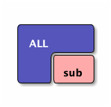

C++
Table of Contents
Instruction to C++
TNFSH CPP 教材
Variable
1: #include <iostream> 2: using namespace std; 3: int main() { 4: int x; 5: x = 32; 6: cout << "This is demostration of variable declaration of C++.\n"; 7: cout << "變數x的內容為: " << x << endl; 8: }
This is demostration of variable declaration of C++. 變數x的內容為: 32
if-else
單一條件
1: #include <iostream> 2: using namespace std; 3: int main() { 4: int x; 5: x=31; 6: if (x%2==0) { 7: cout << "x為偶數\n"; 8: } 9: if (x%2!=0) { 10: cout << "x為奇數\n"; 11: } 12: }
x為奇數
雙重條件
#include <stdio.h> int main() { int x=4; if (x%2==0) { printf("even\n"); } else { printf("odd\n"); } }
for
nested for
while
Instruction to C++
Variable
1: #include <iostream> 2: using namespace std; 3: int main() { 4: int x; 5: x = 32; 6: cout << "This is demostration of variable declaration of C++"; 7: } 8:
if-else
單一條件
1: #include <iostream> 2: using namespace std; 3: int main() { 4: int x; 5: x=32; 6: if (x%2==0) { 7: cout << "x為偶數\n"; 8: } 9: if (x%2!=0) { 10: cout << "x為奇數\n"; 11: } 12: }
雙重條件
#include <stdio.h> #include <iostream> int x=4; if (x%2==0) { cout << "x為偶數\n"; } else { cout << "x為奇數\n"; }
for
nested for
while
function
function declaration
function define
compute n!
#include <stdio.h> int n(int x) { if (x==1) { return 1; } else { return x*n(x-1); } } int main() { int hi = 5; printf("%d\n",n(5)); }
function
function declaration
function define
compute n!
#include <iostream> using namespace std; int n(int x) { if (x==1) { return 1; } else { return x*n(x-1); } } int main() { int hi = 9; cout << n(8) << endl; }
python
1: def foo(x): 2: if x>0: 3: return x+1 4: 5: else: 6: return x-1 7: 8: return foo(5)
Python
1: 2: 3: print "Hello" 4:
ditaa
